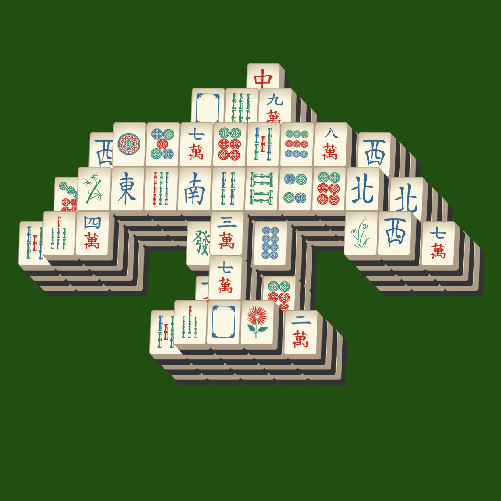

There are lots of beliefs, practices, and traditions about mahjong. For example, getting invited to a game of mahjong signified close bonds, kinship, and acceptance. The game is closely related to Chinese teahouse culture and has been a way for people to gather and socialize with one another. Because of this, the game has generated immense popularity.
Because of its popularity, there are many superstitions and taboos about mahjong. Some notable examples are:
Though I’ve only touched on Chinese Mahjong, the game has demonstrated worldwide influence and gave rise to over 40 variations of the game in other countries like Japan, America, and Singapore, which use different tiles and rules. Some variations of Mahjong completely alter its playstyle, mahjong solitaire being such an example. Mahjong’s global influence is a testament to its well-deserved popularity.
Above is a setup of mahjong solitaire known as the bird. More info about mahjong solitaire can be found in this handy website!